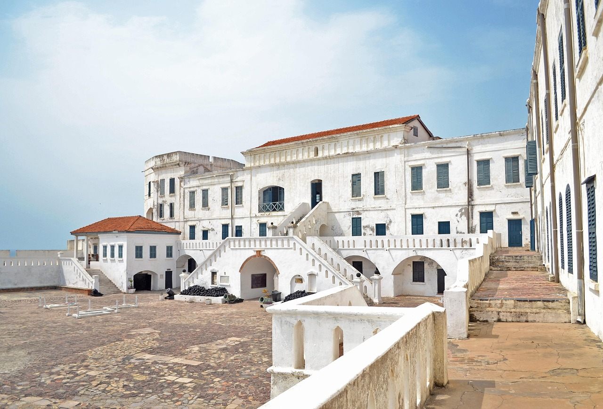

Cape Coast Castle

Location: Central Region
Cape Coast Castle is one of Ghana's most significant historical landmarks. Built in 1653, it served as a trading post and later as a holding point for enslaved people. Today, it stands as a museum and UNESCO World Heritage Site that honors the memories of millions.
Key Features:
- Underground dungeons and holding cells
- Gate of No Return
- Museum exhibits and artifacts
- Panoramic ocean views
- Educational tours available
Best Time to Visit: November to March (dry season)
Elmina Castle (São Jorge)

Location: Central Region
Elmina Castle, also known as São Jorge Castle, is the oldest European building in sub-Saharan Africa. Constructed by the Portuguese in 1482, it features remarkable architecture and houses moving exhibits about Ghana's historical past.
Key Features:
- Oldest European building in sub-Saharan Africa
- Portuguese architecture and fort structure
- Historical dungeons and prison areas
- Interactive museum displays
- Viewing platforms overlooking the Atlantic
Best Time to Visit: December to February
📍 Visitor Information
Admission: ₵25-50 GHS per person
Hours: 8:00 AM - 5:00 PM daily
Guided Tours: Available in multiple languages
Getting There: Both castles are located in Cape Coast, approximately 2-3 hours from Accra by road.